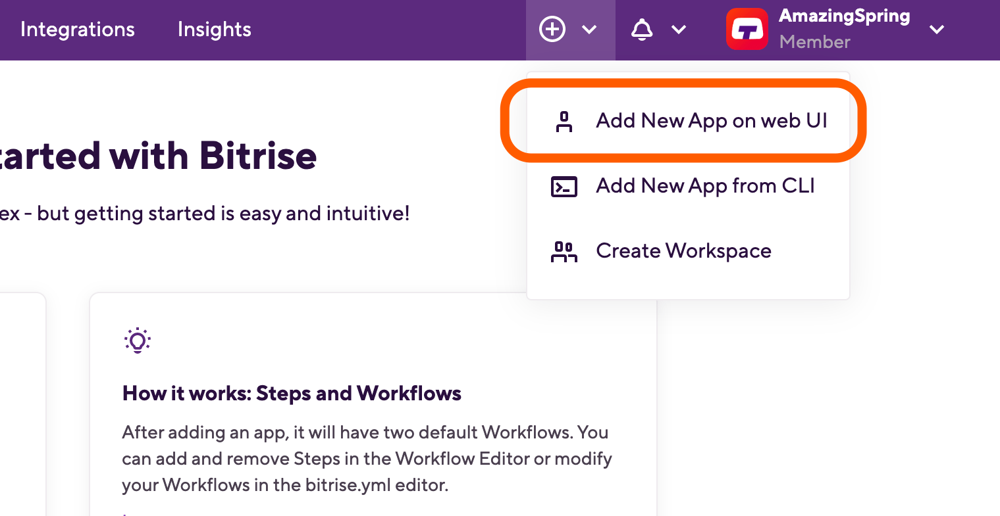
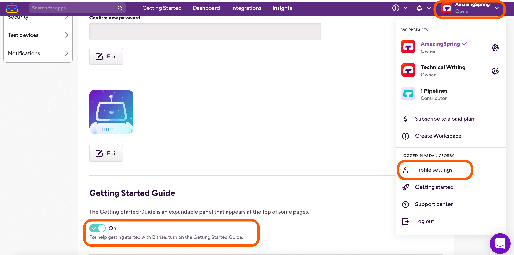
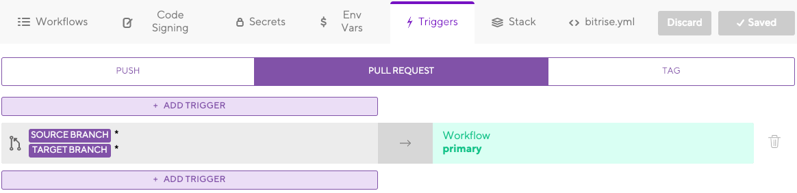
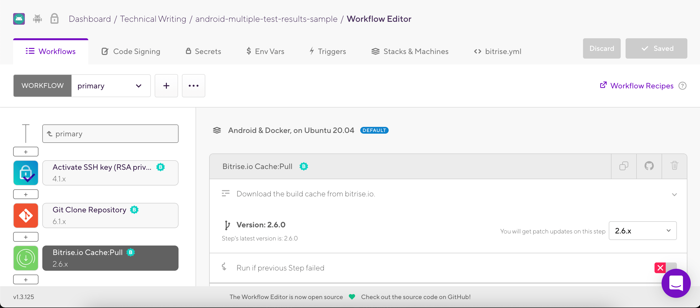

Getting started
Get started on Bitrise by signing up via email or a Git provider, connecting a repository, and running your first build.
Bitrise is a CI/CD Platform as a Service (PaaS), mostly focused on mobile app development. It is a collection of tools and services to help you with the development and automation of your software projects.
To use it, you can sign up via email or via a Git hosting provider, connect a repository, and start building!
Signing up for Bitrise
Signing up with either of the Git service providers means you connect your Bitrise account to your account on that service provider. With a connected account, you can grant Bitrise access to any of your repositories on that account.
After signing up, you can connect your Bitrise account to all of the three supported Git service providers. For example, after you signed up with GitHub, you can connect your Bitrise account to both your GitLab and Bitbucket accounts, too, and access any repositories you have on those accounts.
Creating your first Workspace
After signing up, Bitrise will automatically create your first Workspace. A Workspace is an environment that allows you to manage your Bitrise apps and the team members working on the apps. You need a Workspace to be able to add an app and start running builds. You can:
Workspace name
Don't worry: you can rename any of your Workspaces at any time!
To sign up for a paid subscription of your own, you need to have at least one Workspace. Check our Pricing page for more information.
Adding a new app
Adding a new app to Bitrise means that you connect a Git repository to Bitrise, allowing us to clone the repository and then build it.
Add a new app any time by clicking the + symbol on the top menu bar and then selecting from the dropdown menu.

As part of the initial configuration process, you:
-
Decide if an app is private or public. Private app data is only available to those who are invited to work on the app.
-
Specify the repository: it can be either a GitHub, GitLab or Bitbucket repository, a manual repository URL, or a self-hosted GitLab repository.
-
Register an SSH key: this gives Bitrise access to the repository so we can clone it during the build process.
-
Specify the branch that you want to build.
You can change all this later - and anyway, adding a new app takes a couple of minutes so you can always just do the process from scratch.
As part of the process, Bitrise will scan and validate your repository and set up an app configuration based on the results of the scan: we can detect the platform type of your app based on the configuration files. If the validation fails, you can set up the app manually.
Read the details of the process in our Adding your first app guide.
You can also enable the Getting Started Guide to receive hints while adding your app: Open your Profile settings, scroll down to the Getting Started Guide section, and set the toggle to .
 |
Webhooks and triggers
You can set up webhooks as part of the process of adding a new app, or at any time later. Webhooks allow Bitrise to communicate with third party services: for example, a Bitrise webhook set up on a GitHub repository allows Bitrise to start a build automatically when code is modified in the repository.
Git Insights
In addition to automatic build triggers, webhooks also enable the use of Git Insights, a part of our Insights monitoring tool that enables users to quantify Git collaboration through metrics such as pull request cycle time and merge frequency.
Once webhooks are set up, configure when to start builds automatically by defining triggers. You can set:
-
The event which should trigger the build: for example, code push or a pull request.
-
The branch of your repository that can trigger builds: for example, main or dev.

This means that you can, for example, set up a trigger that starts a build when a pull request is opened to the main branch.
Webhooks are required for triggers to work! Read more:
Builds and Workflows
Once you added an app, your first build will be kicked off automatically. To view your builds, go to your Dashboard - which is the first page once you log in to Bitrise -, select the app and click the Builds tab to access your builds.
A build is a series of jobs, executed in the order defined in the app’s Workflows. The jobs are called Steps, which represent blocks of script execution. The Steps can be arranged on the graphical UI of the Workflow Editor and they can do a huge number of things: clone your repository, build your app, run tests, pass values to each other, send notification messages to developers, and many more.

Read more in our relevant guides:
Workflow recipes
We are also offering Workflow recipes: these are example Workflows for the most common use cases on Bitrise.
A build's logs can be viewed on the build’s page: go to the Builds tab and select the build you want.
All builds run in clean virtual machines that are discarded after the build is complete. Read more about them: Build machines.
Testing and deploying
Testing your app and deploying your app are both done with the help of our Steps: we have Steps dedicated to both these functions, based on the platform type. Unit testing, UI testing, and real device testing are all possible on Bitrise:
Once your app is tested, built and ready to go, you can quickly deploy it to the store of your choice, for example, Google Play or the App Store.
You can also check out Ship, our fast and efficient deployment solution: Deploying with Ship.